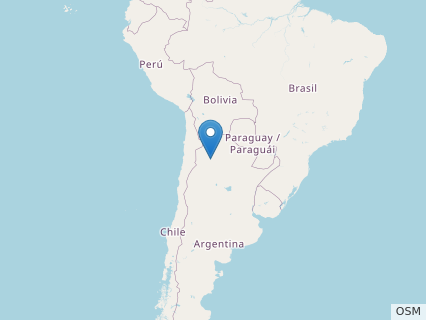
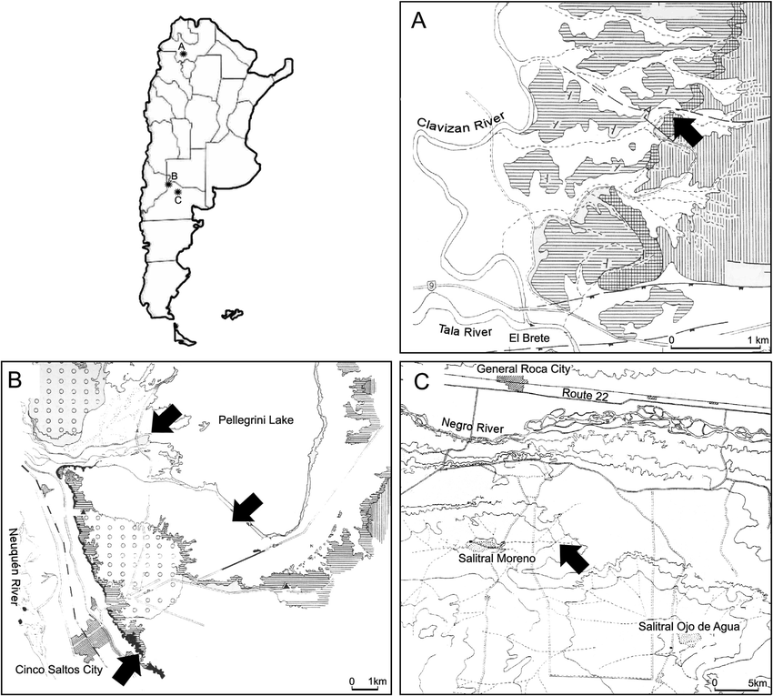
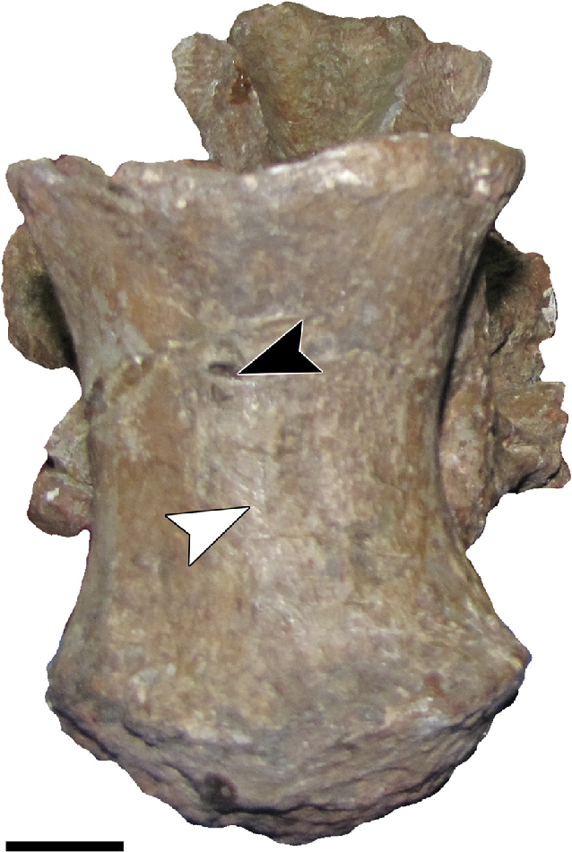
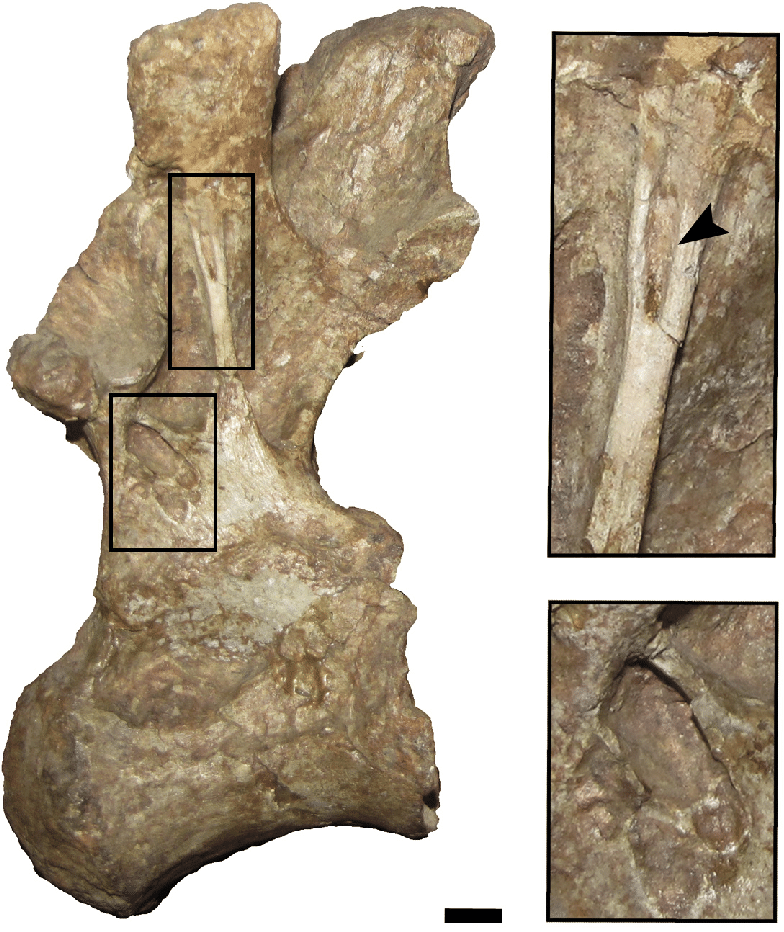

Classification
| Genus | Saltasaurus |
| Species | S. Ioricatus |
| Family | Saltasauridae |
| Suborder | Titanosaur |
| Order | Saurischia |
| Subclass | Tetrapod |
| Class | Reptilia |
| Subphylum | Vertebrata |
| Phylum | Chordata |
| Kingdom | Animalia |
Location Map
Time Period/Contemporaries
The Saltasaurus lived in the late Cretaceous period, about 66-70 million years ago.
Contemporaries:
- Albertosaurus
- Nedoceratops
- Polyptychodon
Communication
These dinosaurs, like others of their kind, most likely communicated to other members of their herds with a mix of both visual and vocal communication. This would help them alert others of danger, emergency, or food.
Life Cycle
While it’s debated on whether the young would receive parental care, it is suggested via their herding tendencies that they would remain with the herd after hatching. Later in life a female Saltasaurus will dig a clutch, likely with its hind legs, where it would lay 25 11-12 centimeter eggs per clutch.
Predators
The small bony plates in the Saltasuarus’s skin served as very good protection against predators in the area they lived in. However some massive dinosaurs like the Abelisaurus and the Carnotaurus were able to serve some threat to the herds of the Saltasaurus.
Fossil Map
Fossil A
Anterior middle dorsal vertebra (PVL 4017-15) of Saltasaurus loricatus in ventral view. Note the presence of a longitudinal ventral keel (white arrowhead) and a foramen (black arrow). Scale bar: 2 cm.
Scale
Compared to other members of the Sauropoda, the Saltasaurus is rather small with a short neck and stubby limbs. However it is still very large compared to modern creatures.
Habitat
The Saltasaurus lived in dense forests primarily found in north-west Argentina. The marshy nature also hints that this creature may have been semi-aquatic. They would feed on the foliage of these forests, being a herbivore.
Identification
Compared to other members of the Sauropoda, the Saltasaurus is rather small with a short neck and stubby limbs. However it is still very large compared to modern creatures.
Discovered
The Saltasaurus’s fossils were first excavated in 1977 by Jose Bonaparte, Martin Vince, and Juan C. Leal at the Estancia ``El Brete”. While the general name “Saltasaurus'' translates to “Lizard from Salta”, the specific name translates to “protected by small armored plates” describing some of its physical traits.
Diet
It is thought the Saltasaurus, given its size, needed to eat roughly 400-500 lbs. of vegetation per day. This was primarily sourced from cycads, seed ferns, and other plant matter on the ground level where it could reach it.
Behaviors and Adaptations
The bone structure of the Saltasaurus suggests they were slow moving creatures. The adults also likely stuck together to protect juveniles while using their body armor for their own defense against predators. Their swampy habitat, along with their form (which resembles that of a hippopotamus), has led some researchers to believe this dinosaur might’ve been semi-aquatic as well.
Breeding Behaviors
Fossils of nests and eggs found in the Patagonia region of Argentina suggest herding behaviors between the Saltasaurus. Many nests of about 25 eggs each in close proximity hint this might be for extra protection against some of the predators in the area.
Fossil B
Left lateral view of PVL 4017-15 shows an accessory septum dividing the pacdf (lower box inset) and a pneumatic foramen (arrowhead) in the border of the pcdl (upper box inset). Scale bar: 2 cm.